Moje wspomnienia / 8-bitowe legendy
Atari.
Kasety, joystick, piksele i ten niepowtarzalny klimat lat 80.
Atari — komputer, który miał duszę
Atari 400 i 800 zadebiutowały w 1979 roku. Później przyszły serie XL i XE — komputery, które również w Polsce zdobyły ogromną popularność. Ośmiobitowe Atari potrafiło zaskoczyć kolorową grafiką, dźwiękiem i grami, przy których znikały całe popołudnia.
Wystarczył telewizor, magnetofon kasetowy i joystick. A kiedy gra wreszcie się wczytała, zaczynała się prawdziwa przygoda. Oto mała podróż do tamtych czasów — z obrazami pochodzącymi z mojego archiwum Atari.
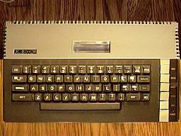
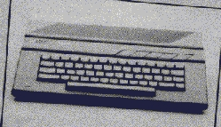
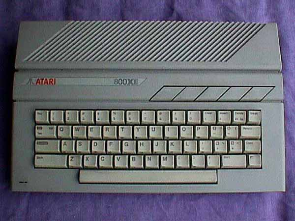
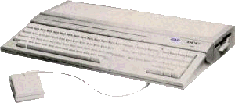
Kultowe gry Atari
Autentyczne zrzuty ekranów z dołączonego archiwum. Kliknij, aby powiększyć.
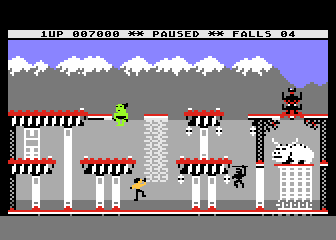
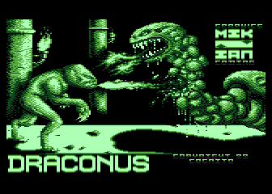
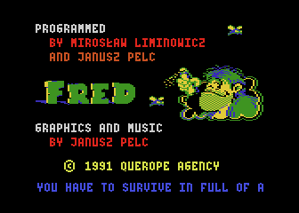
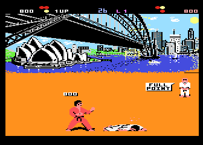
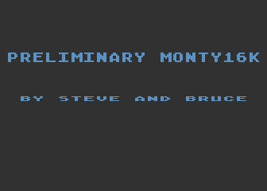
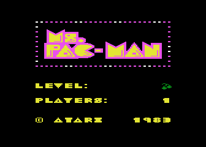
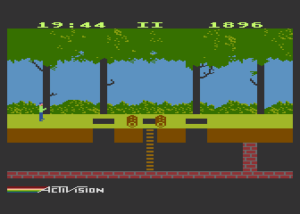
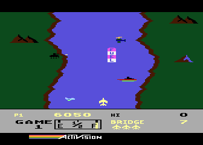
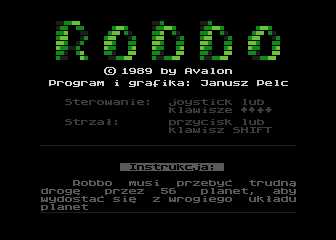
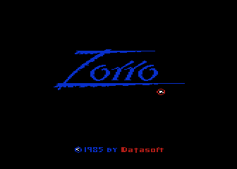
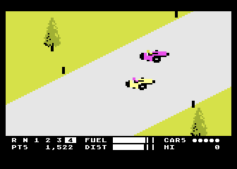
Atari dziś — retro bez końca
Atari to nie tylko gry. Były też programy użytkowe, dema, muzyka i całe środowisko pasjonatów. Dzięki emulatorom można wrócić do tego świata również na współczesnym komputerze.
W moim archiwum znajdziesz emulatory, gry, programy, dema, muzykę, okładki oraz zdjęcia. Wybierz swój ulubiony tytuł i wróć na chwilę do epoki joysticków!